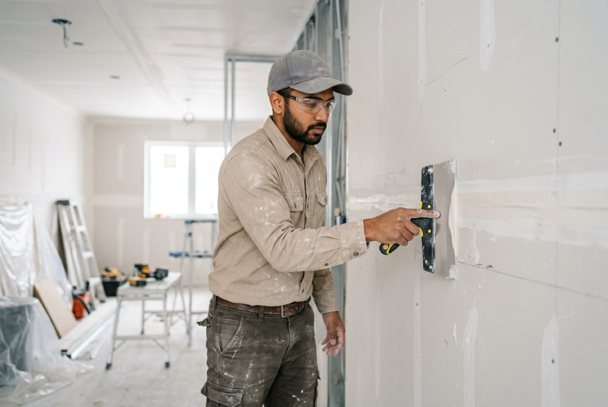

Walls so smooth you'll forget they were ever damaged.
Between Historic Roswell's antebellum charm and the big wave of 1980s–90s subdivisions off Holcomb Bridge, Roswell homes are at exactly the age where roofs, floors, paint and trim come due for renewal.
From water-stained ceilings after a Fulton County storm to full basement build-outs, our finishers work to a standard where raking light shows a flat, clean wall. Texture matching means a patch in a Roswell home should be invisible once painted.
Drywall is the skill you only notice when it's done badly. Our finishers tape, mud, and sand to a standard where light from any angle shows a clean, flat wall — the test most patch jobs fail. Water damage from Georgia storms, cracked ceilings, kids-were-kids holes, or a new basement build-out: one crew handles hanging, finishing, texture, and (if you want) primer and paint.
Yes — orange peel, knockdown, skip trowel, and smooth finishes. A matched patch should be invisible once painted, and that's the standard we hold.
Small patches are usually same-visit. Larger repairs need a return visit for second coats and sanding — typically finished within 2–3 days.
Yes — Roswell is one of our core service areas. Our crews work throughout Fulton County, including Historic Roswell, Canton Street, Holcomb Bridge, with the same licensed, insured standard on every job.
Use the free-quote form on this site or email info@buildheritage.org. We respond within one business day and every Roswell quote is free, written, and itemized line by line.